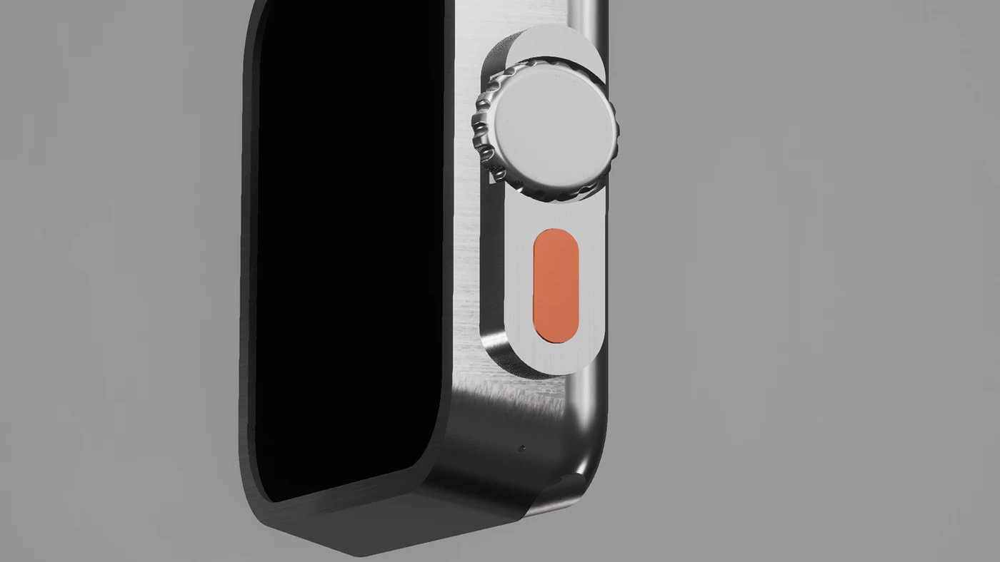
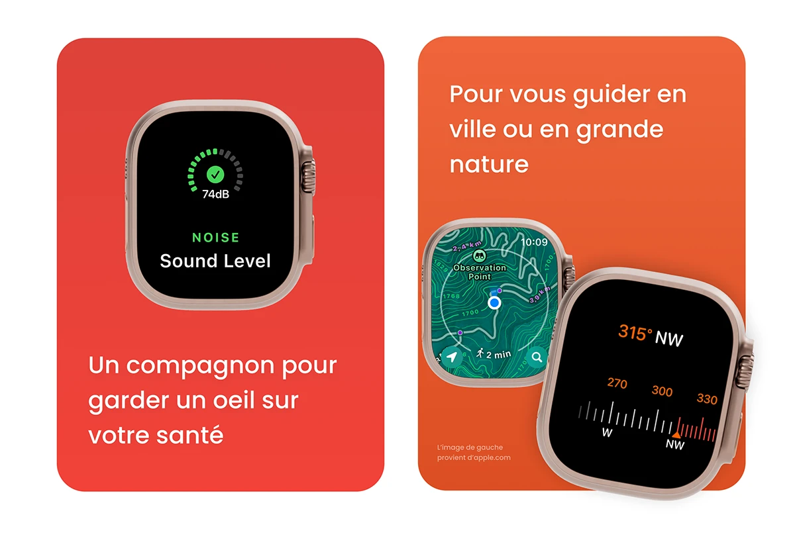
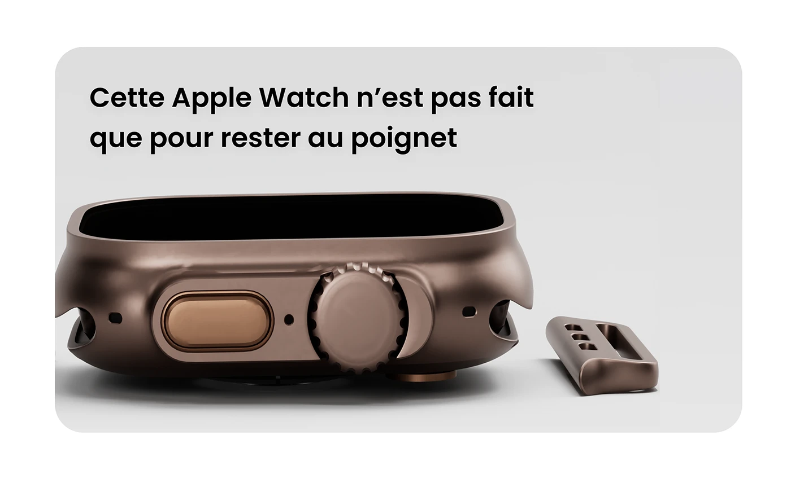

Et si l’Apple Watch prenait la place du smartphone au quotidien ? En cinq semaines, j’ai imaginé deux versions d’un appareil compact, en travaillant sa forme et les fonctions qu’il rassemble.
Repenser la place du smartphone
Tout est parti d’une question : combien de temps passons-nous sur nos écrans ? J’ai voulu un appareil qui se limite à l’utile, comme communiquer, se repérer ou prendre une photo, et qui laisse plus de place à ce qui se passe hors écran.
Il s’adresse à des personnes actives qui veulent rester joignables et organiser leur journée, tout en s’accordant des pauses de connexion. Au programme : appels et messages, musique, traduction, dictaphone, calculatrice et suivi des activités sportives.
Une première version plus grande
L’Apple Watch a été ma principale référence pour la forme du boîtier et ses commandes. La première version reprend ces repères dans un format de 49 × 55 mm : plus grand, pour une lecture plus confortable et davantage de place pour la batterie.
J’ai travaillé le volume du boîtier, la couronne de navigation et les boutons d’action en 3D. Les vues en transparence m’ont servi à étudier l’organisation de l’objet et la place des composants.
Faire évoluer le boîtier

La première proposition
Un boîtier aux lignes plus anguleuses, avec des commandes physiques sur les côtés.

Explorer la construction
Une vue de travail pour étudier la forme de l’objet et l’intégration des composants.

Les commandes physiques
La couronne et le bouton d’action complètent l’écran dans la proposition.

Deux versions, deux proportions
La seconde version revient à un format de 49 × 44 mm, avec des angles plus arrondis.
Une seconde version pour remplacer le smartphone
La seconde version se rapproche du format de l’Apple Watch Ultra 2 et sort du poignet. J’ai intégré un appareil photo au dos, à côté des capteurs : on détache le boîtier de son bracelet pour prendre des photos et des vidéos.
J’ai choisi une teinte rose sable, proche de la peau, pour que le boîtier se fasse plus discret. Les rendus le montrent en usage : photographie, orientation, mesure du niveau sonore et connexion à des accessoires sans fil.
Les usages envisagés

Photographier sur le moment
Le concept prévoit un objectif équivalent à 35 mm et une interface pour passer de la photo à la vidéo.

Se repérer et suivre son environnement
La carte, la boussole et la mesure du niveau sonore illustrent des fonctions accessibles au quotidien.

Connecter ses accessoires
La proposition prévoit l’utilisation d’écouteurs et d’autres accessoires sans fil.

Utiliser l’objet hors du poignet
Le boîtier détaché de son bracelet ouvre la possibilité d’autres prises en main, notamment pour photographier.
Bilan de l’expérience
Avec ce projet, je suis parti d’une réflexion sur nos usages du smartphone pour arriver à un objet. J’ai fait évoluer les proportions du boîtier et intégré un appareil photo, en gardant les repères de navigation de l’Apple Watch.
Cela reste une proposition de design. Il faudrait un prototype fonctionnel pour évaluer l’autonomie, l’intégration des composants et le confort d’utilisation, tout comme l’effet réel sur le temps passé devant l’écran.